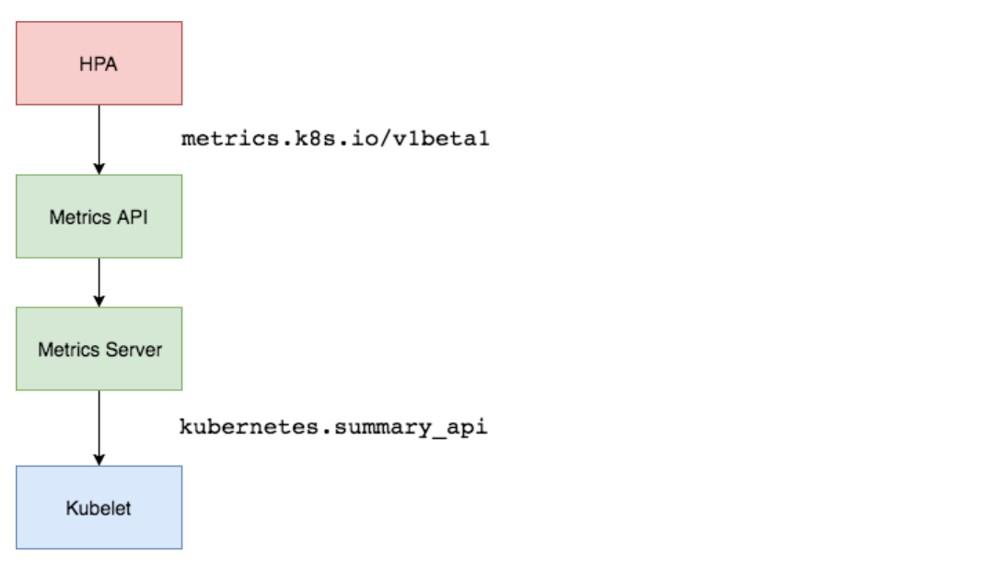

HPA 控制器¶
在前面的学习中我们使用用一个 kubectl scale 命令可以来实现 Pod
的扩缩容功能，但是这个毕竟是完全手动操作的，要应对线上的各种复杂情况，我们需要能够做到自动化去感知业务，来自动进行扩缩容。
为此，Kubernetes
也为我们提供了这样的一个资源对象：Horizontal Pod Autoscaling（Pod 水平自动伸缩），简称HPA，HPA
通过监控分析一些控制器控制的所有 Pod 的负载变化情况来确定是否需要调整
Pod 的副本数量，这是 HPA 最基本的原理：

我们可以简单的通过 kubectl autoscale 命令来创建一个 HPA
资源对象，HPA Controller默认30s轮询一次（可通过
kube-controller-manager
的--horizontal-pod-autoscaler-sync-period
参数进行设置），查询指定的资源中的 Pod
资源使用率，并且与创建时设定的值和指标做对比，从而实现自动伸缩的功能。
1.Metrics Server¶
在 HPA 的第一个版本中，我们需要 Heapster 提供 CPU 和内存指标，在 HPA
v2 过后就需要安装 Metrcis Server 了，Metrics Server 可以通过标准的
Kubernetes API 把监控数据暴露出来，有了 Metrics Server
之后，我们就完全可以通过标准的 Kubernetes API
来访问我们想要获取的监控数据了：
https://10.96.0.1/apis/metrics.k8s.io/v1beta1/namespaces/<namespace-name>/pods/<pod-name>
比如当我们访问上面的 API 的时候，我们就可以获取到该 Pod
的资源数据，这些数据其实是来自于 kubelet 的 Summary API
采集而来的。不过需要说明的是我们这里可以通过标准的 API
来获取资源监控数据，并不是因为 Metrics Server 就是 APIServer
的一部分，而是通过 Kubernetes 提供的 Aggregator
汇聚插件来实现的，是独立于 APIServer 之外运行的。

2.聚合 API¶
Aggregator 允许开发人员编写一个自己的服务，把这个服务注册到
Kubernetes 的 APIServer 里面去，这样我们就可以像原生的 APIServer 提供的
API 使用自己的 API 了，我们把自己的服务运行在 Kubernetes 集群里面，然后
Kubernetes 的 Aggregator 通过 Service 名称就可以转发到我们自己写的
Service 里面去了。这样这个聚合层就带来了很多好处：
增加了 API 的扩展性，开发人员可以编写自己的 API 服务来暴露他们想要的 API。
丰富了 API，核心 kubernetes 团队阻止了很多新的 API 提案，通过允许开发人员将他们的 API 作为单独的服务公开，这样就无须社区繁杂的审查了。
开发分阶段实验性 API，新的 API 可以在单独的聚合服务中开发，当它稳定之后，在合并会 APIServer 就很容易了。
确保新 API 遵循 Kubernetes 约定，如果没有这里提出的机制，社区成员可能会被迫推出自己的东西，这样很可能造成社区成员和社区约定不一致。
3.安装¶
所以现在我们要使用 HPA，就需要在集群中安装 Metrics Server
服务，要安装 Metrics Server 就需要开启 Aggregator，因为
Metrics Server 就是通过该代理进行扩展的，不过我们集群是通过 Kubeadm
搭建的，默认已经开启了，如果是二进制方式安装的集群，需要单独配置
kube-apsierver 添加如下所示的参数：
--requestheader-client-ca-file=<path to aggregator CA cert>
--requestheader-allowed-names=aggregator
--requestheader-extra-headers-prefix=X-Remote-Extra-
--requestheader-group-headers=X-Remote-Group
--requestheader-username-headers=X-Remote-User
--proxy-client-cert-file=<path to aggregator proxy cert>
--proxy-client-key-file=<path to aggregator proxy key>
如果 kube-proxy 没有和 APIServer
运行在同一台主机上，那么需要确保启用了如下 kube-apsierver 的参数：
--enable-aggregator-routing=true
对于这些证书的生成方式，我们可以查看官方文档：https://github.com/kubernetes-sigs/apiserver-builder-alpha/blob/master/docs/concepts/auth.md。
Aggregator 聚合层启动完成后，就可以来安装 Metrics Server
了，我们可以获取该仓库的官方安装资源清单：
# 官方仓库地址：https://github.com/kubernetes-sigs/metrics-server
$ wget https://github.com/kubernetes-sigs/metrics-server/releases/download/v0.3.6/components.yaml
等部署完成后，可以查看 Pod 日志是否正常：
$ kubectl apply -f components.yaml
$ kubectl get pods -n kube-system -l k8s-app=metrics-server
NAME READY STATUS RESTARTS AGE
metrics-server-6886856d7c-g5k6q 1/1 Running 0 2m39s
$ kubectl logs -f metrics-server-6886856d7c-g5k6q -n kube-system
......
E1119 09:05:57.234312 1 manager.go:111] unable to fully collect metrics: [unable to fully scrape metrics from source kubelet_summary:ydzs-node1: unable to fetch metrics from Kubelet ydzs-node1 (ydzs-node1): Get https://ydzs-node1:10250/stats/summary?only_cpu_and_memory=true: dial tcp: lookup ydzs-node1 on 10.96.0.10:53: no such host, unable to fully scrape metrics from source kubelet_summary:ydzs-node4: unable to fetch metrics from Kubelet ydzs-node4 (ydzs-node4): Get https://ydzs-node4:10250/stats/summary?only_cpu_and_memory=true: dial tcp: lookup ydzs-node4 on 10.96.0.10:53: no such host, unable to fully scrape metrics from source kubelet_summary:ydzs-node3: unable to fetch metrics from Kubelet ydzs-node3 (ydzs-node3): Get https://ydzs-node3:10250/stats/summary?only_cpu_and_memory=true: dial tcp: lookup ydzs-node3 on 10.96.0.10:53: no such host, unable to fully scrape metrics from source kubelet_summary:ydzs-master: unable to fetch metrics from Kubelet ydzs-master (ydzs-master): Get https://ydzs-master:10250/stats/summary?only_cpu_and_memory=true: dial tcp: lookup ydzs-master on 10.96.0.10:53: no such host, unable to fully scrape metrics from source kubelet_summary:ydzs-node2: unable to fetch metrics from Kubelet ydzs-node2 (ydzs-node2): Get https://ydzs-node2:10250/stats/summary?only_cpu_and_memory=true: dial tcp: lookup ydzs-node2 on 10.96.0.10:53: no such host]
我们可以发现 Pod
中出现了一些错误信息：xxx: no such host，我们看到这个错误信息一般就可以确定是
DNS 解析不了造成的，我们可以看到 Metrics Server 会通过 kubelet 的 10250
端口获取信息，使用的是 hostname，我们部署集群的时候在节点的
/etc/hosts 里面添加了节点的 hostname 和 ip 的映射，但是是我们的
Metrics Server 的 Pod 内部并没有这个 hosts 信息，当然也就不识别 hostname
了，要解决这个问题，有两种方法：
第一种方法就是在集群内部的 DNS 服务里面添加上 hostname
的解析，比如我们这里集群中使用的是 CoreDNS，我们就可以去修改下
CoreDNS 的 Configmap 信息，添加上 hosts 信息：
$ kubectl edit configmap coredns -n kube-system
apiVersion: v1
data:
Corefile: |
.:53 {
errors
health
hosts { # 添加集群节点hosts隐射信息
10.151.30.11 ydzs-master
10.151.30.57 ydzs-node3
10.151.30.59 ydzs-node4
10.151.30.22 ydzs-node1
10.151.30.23 ydzs-node2
fallthrough
}
kubernetes cluster.local in-addr.arpa ip6.arpa {
pods insecure
upstream
fallthrough in-addr.arpa ip6.arpa
}
prometheus :9153
proxy . /etc/resolv.conf
cache 30
reload
}
kind: ConfigMap
metadata:
creationTimestamp: 2019-05-18T11:07:46Z
name: coredns
namespace: kube-system
这样当在集群内部访问集群的 hostname 的时候就可以解析到对应的 ip
了，另外一种方法就是在 metrics-server 的启动参数中修改
kubelet-preferred-address-types 参数，如下：
args:
- --cert-dir=/tmp
- --secure-port=4443
- --kubelet-preferred-address-types=InternalIP
我们这里使用第二种方式，然后重新安装：
$ kubectl apply -f components.yaml
$ kubectl get pods -n kube-system -l k8s-app=metrics-server
NAME READY STATUS RESTARTS AGE
metrics-server-5d4dbb78bb-6klw6 1/1 Running 0 14s
$ kubectl logs -f metrics-server-5d4dbb78bb-6klw6 -n kube-system
I1119 09:10:44.249092 1 serving.go:312] Generated self-signed cert (/tmp/apiserver.crt, /tmp/apiserver.key)
I1119 09:10:45.264076 1 secure_serving.go:116] Serving securely on [::]:4443
$ kubectl get apiservice | grep metrics
v1beta1.metrics.k8s.io kube-system/metrics-server True 9m
$ kubectl get --raw "/apis/metrics.k8s.io/v1beta1/nodes"
{"kind":"NodeMetricsList","apiVersion":"metrics.k8s.io/v1beta1","metadata":{"selfLink":"/apis/metrics.k8s.io/v1beta1/nodes"},"items":[{"metadata":{"name":"ydzs-node3","selfLink":"/apis/metrics.k8s.io/v1beta1/nodes/ydzs-node3","creationTimestamp":"2019-11-19T09:11:53Z"},"timestamp":"2019-11-19T09:11:38Z","window":"30s","usage":{"cpu":"240965441n","memory":"3004360Ki"}},{"metadata":{"name":"ydzs-node4","selfLink":"/apis/metrics.k8s.io/v1beta1/nodes/ydzs-node4","creationTimestamp":"2019-11-19T09:11:53Z"},"timestamp":"2019-11-19T09:11:37Z","window":"30s","usage":{"cpu":"167036681n","memory":"2574664Ki"}},{"metadata":{"name":"ydzs-master","selfLink":"/apis/metrics.k8s.io/v1beta1/nodes/ydzs-master","creationTimestamp":"2019-11-19T09:11:53Z"},"timestamp":"2019-11-19T09:11:38Z","window":"30s","usage":{"cpu":"350907350n","memory":"2986716Ki"}},{"metadata":{"name":"ydzs-node1","selfLink":"/apis/metrics.k8s.io/v1beta1/nodes/ydzs-node1","creationTimestamp":"2019-11-19T09:11:53Z"},"timestamp":"2019-11-19T09:11:39Z","window":"30s","usage":{"cpu":"1319638039n","memory":"2094376Ki"}},{"metadata":{"name":"ydzs-node2","selfLink":"/apis/metrics.k8s.io/v1beta1/nodes/ydzs-node2","creationTimestamp":"2019-11-19T09:11:53Z"},"timestamp":"2019-11-19T09:11:36Z","window":"30s","usage":{"cpu":"320381888n","memory":"3270368Ki"}}]}
$ kubectl top nodes
NAME CPU(cores) CPU% MEMORY(bytes) MEMORY%
ydzs-master 351m 17% 2916Mi 79%
ydzs-node1 1320m 33% 2045Mi 26%
ydzs-node2 321m 8% 3193Mi 41%
ydzs-node3 241m 6% 2933Mi 37%
ydzs-node4 168m 4% 2514Mi 32%
现在我们可以通过 kubectl top 命令来获取到资源数据了，证明
Metrics Server 已经安装成功了。
4.HPA¶
现在我们用 Deployment 来创建一个 Nginx Pod，然后利用 HPA
来进行自动扩缩容。资源清单如下所示：
hpa-demo.yml
apiVersion: apps/v1
kind: Deployment
metadata:
name: hpa-demo
spec:
selector:
matchLabels:
app: nginx
template:
metadata:
labels:
app: nginx
spec:
containers:
- name: nginx
image: nginx
ports:
- containerPort: 80
然后直接创建 Deployment：
$ kubectl apply -f hpa-demo.yaml
deployment.apps/hpa-demo created
$ kubectl get pods -l app=nginx
NAME READY STATUS RESTARTS AGE
hpa-demo-85ff79dd56-pz8th 1/1 Running 0 21s
现在我们来创建一个 HPA
资源对象，可以使用kubectl autoscale命令来创建：
$ kubectl autoscale deployment hpa-demo --cpu-percent=10 --min=1 --max=10
horizontalpodautoscaler.autoscaling/hpa-demo autoscaled
$ kubectl get hpa
NAME REFERENCE TARGETS MINPODS MAXPODS REPLICAS AGE
hpa-demo Deployment/hpa-demo <unknown>/10% 1 10 1 16s
此命令创建了一个关联资源 hpa-demo 的 HPA，最小的 Pod 副本数为1，最大为10。HPA 会根据设定的 cpu 使用率（10%）动态的增加或者减少 Pod 数量。
当然我们依然还是可以通过创建 YAML 文件的形式来创建 HPA 资源对象。如果我们不知道怎么编写的话，可以查看上面命令行创建的HPA的YAML文件：
$ kubectl get hpa hpa-demo -o yaml
apiVersion: autoscaling/v1
kind: HorizontalPodAutoscaler
metadata:
annotations:
autoscaling.alpha.kubernetes.io/conditions: '[{"type":"AbleToScale","status":"True","lastTransitionTime":"2022-07-13T07:07:52Z","reason":"SucceededGetScale","message":"the
HPA controller was able to get the target''s current scale"},{"type":"ScalingActive","status":"False","lastTransitionTime":"2022-07-13T07:07:52Z","reason":"FailedGetResourceMetric","message":"the
HPA was unable to compute the replica count: failed to get cpu utilization:
missing request for cpu"}]'
creationTimestamp: "2022-07-13T07:07:37Z"
managedFields:
- apiVersion: autoscaling/v1
fieldsType: FieldsV1
fieldsV1:
f:spec:
f:maxReplicas: {}
f:minReplicas: {}
f:scaleTargetRef:
f:apiVersion: {}
f:kind: {}
f:name: {}
f:targetCPUUtilizationPercentage: {}
manager: kubectl-autoscale
operation: Update
time: "2022-07-13T07:07:37Z"
- apiVersion: autoscaling/v1
fieldsType: FieldsV1
fieldsV1:
f:metadata:
f:annotations:
.: {}
f:autoscaling.alpha.kubernetes.io/conditions: {}
f:status:
f:currentReplicas: {}
manager: kube-controller-manager
operation: Update
time: "2022-07-13T07:07:52Z"
name: hpa-demo
namespace: default
resourceVersion: "148343486"
selfLink: /apis/autoscaling/v1/namespaces/default/horizontalpodautoscalers/hpa-demo
uid: fecf4a6c-d735-4d22-a53f-7d76959891ea
spec:
maxReplicas: 10
minReplicas: 1
scaleTargetRef:
apiVersion: apps/v1
kind: Deployment
name: hpa-demo
targetCPUUtilizationPercentage: 10
status:
currentReplicas: 1
desiredReplicas: 0
然后我们可以根据上面的 YAML 文件就可以自己来创建一个基于 YAML 的 HPA 描述文件了。但是我们发现上面信息里面出现了一些 Fail 信息，我们来查看下这个 HPA 对象的信息：
$ kubectl describe hpa hpa-demo
Name: hpa-demo
Namespace: default
Labels: <none>
Annotations: <none>
CreationTimestamp: Tue, 19 Nov 2019 17:14:56 +0800
Reference: Deployment/hpa-demo
Metrics: ( current / target )
resource cpu on pods (as a percentage of request): <unknown> / 10%
Min replicas: 1
Max replicas: 10
Deployment pods: 1 current / 0 desired
Conditions:
Type Status Reason Message
---- ------ ------ -------
AbleToScale True SucceededGetScale the HPA controller was able to get the target's current scale
ScalingActive False FailedGetResourceMetric the HPA was unable to compute the replica count: missing request for cpu
Events:
Type Reason Age From Message
---- ------ ---- ---- -------
Warning FailedGetResourceMetric 14s (x4 over 60s) horizontal-pod-autoscaler missing request for cpu
Warning FailedComputeMetricsReplicas 14s (x4 over 60s) horizontal-pod-autoscaler invalid metrics (1 invalid out of 1), first error is: failed to get cpu utilization: missing request for cpu
我们可以看到上面的事件信息里面出现了
failed to get cpu utilization: missing request for cpu
这样的错误信息。
这是因为我们上面创建的 Pod 对象没有添加 request 资源声明，这样导致 HPA 读取不到 CPU 指标信息，所以如果要想让 HPA 生效，对应的 Pod 资源必须添加 requests 资源声明，更新我们的资源清单文件：
hpa-demo.yml
apiVersion: apps/v1
kind: Deployment
metadata:
name: hpa-demo
spec:
selector:
matchLabels:
app: nginx
template:
metadata:
labels:
app: nginx
spec:
containers:
- name: nginx
image: nginx
ports:
- containerPort: 80
resources:
requests:
memory: 50Mi
cpu: 50m
然后重新更新 Deployment，重新创建 HPA 对象：
$ kubectl apply -f hpa-demo.yml
deployment.apps/hpa-demo configured
$ kubectl get pods -o wide -l app=nginx
NAME READY STATUS RESTARTS AGE IP NODE NOMINATED NODE READINESS GATES
hpa-demo-69968bb59f-twtdp 1/1 Running 0 4m11s 10.244.4.97 ydzs-node4 <none> <none>
$ kubectl delete hpa hpa-demo
horizontalpodautoscaler.autoscaling "hpa-demo" deleted
$ kubectl autoscale deployment hpa-demo --cpu-percent=10 --min=1 --max=10
horizontalpodautoscaler.autoscaling/hpa-demo autoscaled
$ kubectl describe hpa hpa-demo
Name: hpa-demo
Namespace: default
Labels: <none>
Annotations: <none>
CreationTimestamp: Tue, 19 Nov 2019 17:23:49 +0800
Reference: Deployment/hpa-demo
Metrics: ( current / target )
resource cpu on pods (as a percentage of request): 0% (0) / 10%
Min replicas: 1
Max replicas: 10
Deployment pods: 1 current / 1 desired
Conditions:
Type Status Reason Message
---- ------ ------ -------
AbleToScale True ScaleDownStabilized recent recommendations were higher than current one, applying the highest recent recommendation
ScalingActive True ValidMetricFound the HPA was able to successfully calculate a replica count from cpu resource utilization (percentage of request)
ScalingLimited False DesiredWithinRange the desired count is within the acceptable range
Events: <none>
$ kubectl get hpa
NAME REFERENCE TARGETS MINPODS MAXPODS REPLICAS AGE
hpa-demo Deployment/hpa-demo 0%/10% 1 10 1 52s
现在可以看到 HPA 资源对象已经正常了，现在我们来增大负载进行测试，我们来创建一个 busybox 的 Pod，并且循环访问上面创建的 Pod：
$ kubectl run -it --image busybox test-hpa --restart=Never --rm /bin/sh
If you don't see a command prompt, try pressing enter.
/ # while true; do wget -q -O- http://10.244.4.97; done
下图可以看到，HPA 已经开始工作：
$ kubectl get hpa
NAME REFERENCE TARGETS MINPODS MAXPODS REPLICAS AGE
hpa-demo Deployment/hpa-demo 338%/10% 1 10 1 5m15s
$ kubectl get pods -l app=nginx --watch
NAME READY STATUS RESTARTS AGE
hpa-demo-69968bb59f-8hjnn 1/1 Running 0 22s
hpa-demo-69968bb59f-9ss9f 1/1 Running 0 22s
hpa-demo-69968bb59f-bllsd 1/1 Running 0 22s
hpa-demo-69968bb59f-lnh8k 1/1 Running 0 37s
hpa-demo-69968bb59f-r8zfh 1/1 Running 0 22s
hpa-demo-69968bb59f-twtdp 1/1 Running 0 6m43s
hpa-demo-69968bb59f-w792g 1/1 Running 0 37s
hpa-demo-69968bb59f-zlxkp 1/1 Running 0 37s
hpa-demo-69968bb59f-znp6q 0/1 ContainerCreating 0 6s
hpa-demo-69968bb59f-ztnvx 1/1 Running 0 6s
我们可以看到已经自动拉起了很多新的 Pod，最后定格在了我们上面设置的 10 个 Pod，同时查看资源 hpa-demo 的副本数量，副本数量已经从原来的1变成了10个：
$ kubectl get deployment hpa-demo
NAME READY UP-TO-DATE AVAILABLE AGE
hpa-demo 10/10 10 10 17m
查看 HPA 资源的对象了解工作过程：
$ kubectl describe hpa hpa-demo
Name: hpa-demo
Namespace: default
Labels: <none>
Annotations: <none>
CreationTimestamp: Tue, 19 Nov 2019 17:23:49 +0800
Reference: Deployment/hpa-demo
Metrics: ( current / target )
resource cpu on pods (as a percentage of request): 0% (0) / 10%
Min replicas: 1
Max replicas: 10
Deployment pods: 10 current / 10 desired
Conditions:
Type Status Reason Message
---- ------ ------ -------
AbleToScale True ScaleDownStabilized recent recommendations were higher than current one, applying the highest recent recommendation
ScalingActive True ValidMetricFound the HPA was able to successfully calculate a replica count from cpu resource utilization (percentage of request)
ScalingLimited True TooManyReplicas the desired replica count is more than the maximum replica count
Events:
Type Reason Age From Message
---- ------ ---- ---- -------
Normal SuccessfulRescale 5m45s horizontal-pod-autoscaler New size: 4; reason: cpu resource utilization (percentage of request) above target
Normal SuccessfulRescale 5m30s horizontal-pod-autoscaler New size: 8; reason: cpu resource utilization (percentage of request) above target
Normal SuccessfulRescale 5m14s horizontal-pod-autoscaler New size: 10; reason: cpu resource utilization (percentage of request) above target
同样的这个时候我们来关掉 busybox 来减少负载，然后等待一段时间观察下 HPA 和 Deployment 对象：
$ kubectl get hpa
NAME REFERENCE TARGETS MINPODS MAXPODS REPLICAS AGE
hpa-demo Deployment/hpa-demo 0%/10% 1 10 1 14m
$ kubectl get deployment hpa-demo
NAME READY UP-TO-DATE AVAILABLE AGE
hpa-demo 1/1 1 1 24m
缩放间隙
从 Kubernetes
v1.12版本开始我们可以通过设置kube-controller-manager组件的--horizontal-pod-autoscaler-downscale-stabilization参数来设置一个持续时间，用于指定在当前操作完成后，HPA必须等待多长时间才能执行另一次缩放操作。默认为5分钟，也就是默认需要等待5分钟后才会开始自动缩放。
可以看到副本数量已经由 10 变为 1，当前我们只是演示了 CPU 使用率这一个指标，在后面的课程中我们还会学习到根据自定义的监控指标来自动对 Pod 进行扩缩容。
5.demo示例¶
例如，首先创建一个名为myapp的Deployment控制器，而后通过一个同名的HPA控制器自动管控其Pod副本规模：
$ kubectl run myapp --image=ikubernetes/myapp:v1 --replicas=2 \
--requests='cpu=50m,memory=256Mi' --limits='cpu=50m,memory=256Mi' \
--labels='app=myapp' --expose --port=80
$ kubectl autoscale deploy myapp --min=2 --max=5 --cpu-percent=60
下面的命令用于显示HPA控制器的当前状态：
$ kubectl get hpa myapp -o yaml